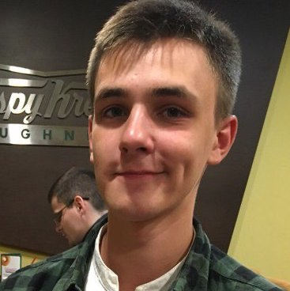

Мужчина, 23 года, родился 23 октября 1998
+7(994)4179941 — предпочитаемый способ связи
Специализации:
— Веб разработка на Ruby on Rails
Компания Матрица
Период
ноябрь 2021 — по настоящее время
Должность
Инженер АСУ ТП
Обязанности
Техническое обслуживание, диагностика, ремонт и настройка средств автоматизации. Пневмоавтоматика. Оперативное устранение неполадок производственной линии. Работа с роботами фирмы brink, waldorf. Монтаж и настройка систем технического зрения Keyence, Sick. Работа с технически сложным оборудованием.